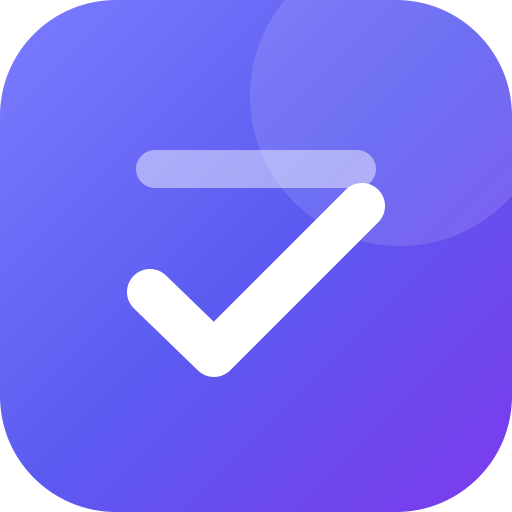

Règles de confidentialité
Application « Mon Organisateur » · dernière mise à jour : 19 octobre 2026
Qui utilise cette application
Mon Organisateur est une application personnelle d'organisation (projets, tâches, agenda, mails). Elle est utilisée par son créateur pour son propre compte. Elle n'est ni vendue ni proposée au public.
Où sont tes données
- Sur ton appareil : projets, tâches, agenda, idées, relances et réglages sont enregistrés dans le navigateur de chaque appareil.
- Dans ton Google Drive, si tu actives la synchronisation : une copie est rangée dans le dossier caché réservé à l'application (« appDataFolder »), visible uniquement par elle et par ton compte.
- Les mails restent sur l'appareil qui les lit. Ils ne sont pas copiés dans le Drive.
Données Google utilisées
- Google Drive (dossier de l'application uniquement) : synchroniser tes données entre tes appareils.
- Gmail (lecture seule) : afficher tes mails récents, repérer les dates et te proposer des tâches. L'application ne peut ni envoyer, ni modifier, ni supprimer de mail.
- Google Agenda : créer un événement de rappel, uniquement quand tu le demandes.
L'utilisation et le transfert à toute autre application des informations reçues des API Google respectent les règles relatives aux données utilisateur des services d'API Google, y compris les exigences d'utilisation limitée (Limited Use).
Assistant (Google Gemini)
Quand tu poses une question à l'assistant, l'application envoie à Gemini les titres et dates de tes tâches, projets, événements et relances. Si tu l'autorises dans les réglages, elle envoie aussi l'expéditeur, l'objet et un court extrait (environ 200 caractères) de tes mails récents, jamais le mail complet. Ces envois passent par le serveur de l'application et ne servent qu'à te répondre.
Serveur de l'application
L'application est hébergée sur Vercel. Son serveur conserve la clé Gemini et le secret de connexion Google, relaie les demandes à l'assistant et renouvelle les autorisations Google. Il n'enregistre pas tes données.
Partage
Aucune donnée n'est vendue, utilisée pour de la publicité ou partagée avec des tiers, en dehors des services nécessaires au fonctionnement décrits ci-dessus (Google et Vercel).
Contrôle et suppression
- Réglages > Données : exporter une sauvegarde ou tout effacer sur l'appareil.
- Réglages > Synchronisation : désactiver la synchronisation.
- Retirer l'accès à tout moment depuis myaccount.google.com/permissions.